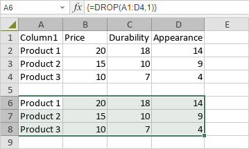

DROP funkcija
DROP funkcija je jedna od funkcija za pretragu i reference. Koristi se za uklanjanje redova ili kolona sa početka ili kraja niza.
Sintaksa
DROP(array, rows, [columns])
DROP funkcija ima sledeće argumente:
| Argument | Opis |
|---|---|
| array | Koristi se za definisanje niza iz kog se uklanjaju redovi ili kolone. |
| rows | Koristi se za određivanje broja redova koji će biti uklonjeni. Negativna vrednost uklanja redove sa kraja niza. |
| columns | Koristi se za određivanje broja kolona koje će biti uklonjene. Negativna vrednost uklanja kolone sa kraja niza. |
Napomene
Imajte u vidu da je ovo formula niza. Da biste saznali više, pročitajte članak Umetanje formula niza.
Kako primeniti DROP funkciju.
Primeri
Slika ispod prikazuje rezultat koji vraća DROP funkcija.
